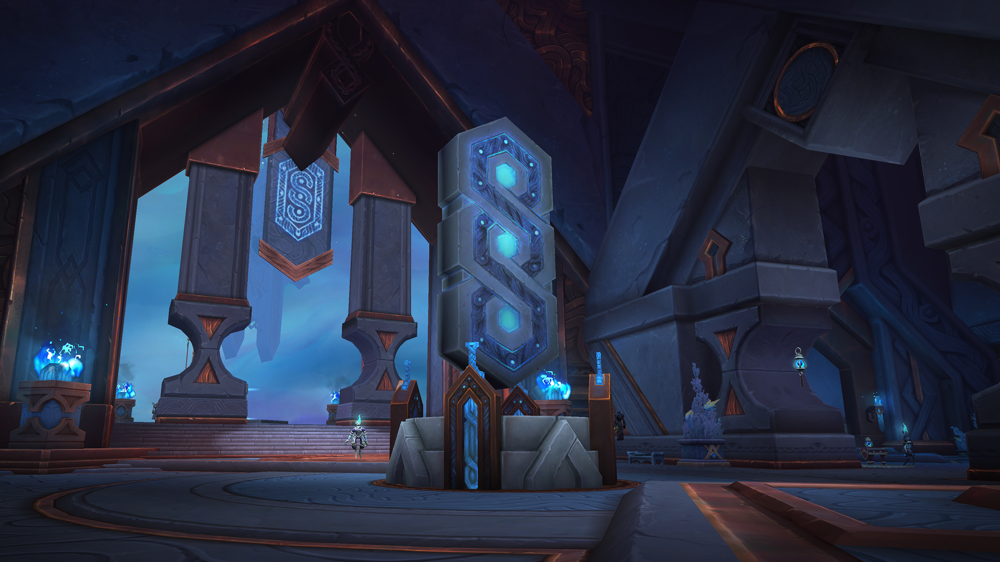

Select a Covenant!
In the Shadowlands, each zone will have one of four Covenants: the Kyrian, Venthyr, Necrolord or Night Fae. You'll be introduced to them through the Shadowlands story and at max level, you'll get to join one of them and get access to their rewards, including a class-specific Covenant ability, a Covenant movement ability, unique transmogs and more!